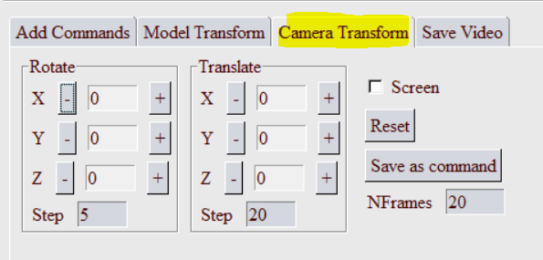

Video Template Editor GUI¶
To open the GUI, select the submenu Video Maker from PY_Tools main menu of VCollab Pro or ProX.

Command List¶
Current list of commands in the template. User can Add, Modify, Run or Save these commands.
Menu¶
File Open: Select a video template file (A file selection dialog will popup). The commands from this file will be added to the Command List.
 Save File: Save all commands defined in the Command List as a video template file.
Save File: Save all commands defined in the Command List as a video template file. Run Commands: Run all commands in the Command List.
Run Commands: Run all commands in the Command List.
 Edit Commands: This is a toggle button. When green, user can directly edit the commands in the Command List.
Edit Commands: This is a toggle button. When green, user can directly edit the commands in the Command List. Clear All: Clear all commands from the Command List.
Clear All: Clear all commands from the Command List.Record Images: Toggle button to set image capturing ON/OFF. When this is in ON mode, Images will be captured into a temporary folder. Save command will create video from these images.
 Exit: Close this dialog and exit.
Exit: Close this dialog and exit. Help: Show this help message in a browser tab.
Help: Show this help message in a browser tab.
Add Commands¶
User can define a new command in this text filed. This command can be added to the Command list.

Argument List: When user enters a valid command, a list of parameters that can be specified for the command will be displayed in this text box.
Run Command: If this checkbox is ON, command will be run before entering into the Command List.
Enter: Click this button to add the command in the text filed to the Command List.
Clear: Click this button to clear current command in the text field.
Select Commands: Click this button to select a command from the Tree View (as shown below).

When a new command is selected/edited in text filed, corresponding argument list will be displayed in the Argument List text box.
Model Transform¶
User can define a set of Model/Part transformation (rotate and move) commands using GUI.

Select few parts from screen and use +/- buttons to rotate or translate the selected parts.
Selected parts will be displayed in the Selected Parts list box.
Use Part Menu to select any parts from a listbox.
Screen toggle can be used to define axis in Screen/Camera cordinate system.
Save as Command will save all the model movement commands.
NFrames will be used as number of frames.
Camera Transform¶
User can define a set of Camera transform commands (rotate and move) in this GUI.
Use +/- buttons to rotate or translate the camera.
Screen toggle can be used to define axis in Screen/Camera cordinate system.
Save as Command will save all the camera movement commands.
NFrames will be used as number of frames.
Save Video¶
User can Save a video file from this tab.
When the Record Images button is ON, the recorded images will be saved in a temperory folder and the Number of Images Saved will be updated.
Reset Capture will reset the captured images.
User can Browse to the folder and set the video file name. Currently supported formats are: MP4, GIF, AVI, FLV, and WMV.
Save will stitch all the captured images together and save them as the video file.

Example¶
Here is a sample command template file:
#-- VPANIM_PARAMS,nFrame_VP2VP,nImgsPerView=1,iSectionAnimFrames,iExplodeAnimFrames
VPANIM_PARAMS,25,2,25,25
#-- VPANIM_CAEPARAMS,bCAEAnim(Y/N),nCylesPerView,nFramesPerCyle,nImgsPerCAEFrame
VPANIM_CAEPARAMS,Y,4,24,1
#-- Select ViewPoint 1
APPLY_VP,1
VP2VP_ANIM,1,3
MOVE_CAMERA,300,100,0,30,Y
ROTATE_CAMERA,1,0,0,90,30,Y
SAVE_VIDEO,Test123.mp4,0
EXIT
Note
Commands will be excecuted line by line. Any text after ‘#’ is a comment.